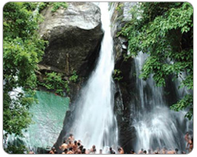

Jalagamparai water falls is located in the Yelagiri hills of the Vellore

district of Tamil Nadu. Flowing down from a breathtaking height of 15 meters, the place is popular among lovebirds. Created by the Attaru river, which flows through the Yelagiri hills.Jalagamparai waterfalls is a beautiful spot for picnic. The falls can be reached after a 1 hour trek of 6 km from Nilavoor. Best time to visit the falls is after the monsoon rains.
This could either be reached from Tiruppathur 15 kms away or it is an hours trek from the hills. Adjacent to the Jalagambari falls, there is a Murugan temple, located within a building constructed in the shape of the lingam.